<meta charset="utf-8"><title>11/26のコラム note貼り付け</title>
<style>
/* one column of numbered paste steps; text steps vs image steps differ by marker */
:root{--bg:#F5F4F0;--card:#FFFFFF;--ink:#1D2321;--mute:#5F665F;--line:#DCDAD2;--btn:#1F5FBF;--btnok:#2E8B4F;--img:#E9F3EC;--imgink:#22663B;--sans:'IBM Plex Sans JP','Hiragino Sans','Noto Sans JP',sans-serif}
@media (prefers-color-scheme:dark){:root:not([data-theme="light"]){--bg:#171A19;--card:#202423;--ink:#ECEDE8;--mute:#A3AAA2;--line:#343937;--btn:#4D8BE6;--btnok:#3FA866;--img:#1E2C23;--imgink:#8FD3A6;color-scheme:dark}}
:root[data-theme="dark"]{--bg:#171A19;--card:#202423;--ink:#ECEDE8;--mute:#A3AAA2;--line:#343937;--btn:#4D8BE6;--btnok:#3FA866;--img:#1E2C23;--imgink:#8FD3A6;color-scheme:dark}
body{background:var(--bg);color:var(--ink);font-family:var(--sans);font-size:15px;line-height:1.75;padding:20px 16px 60px}
main{max-width:680px;margin:0 auto;display:grid;gap:28px}
header h1{font-size:22px;margin:0 0 6px;text-wrap:balance}
header p{margin:0;color:var(--mute);font-size:14px}
nav{display:flex;gap:8px;flex-wrap:wrap;margin-top:12px}
nav a{border:1px solid var(--line);border-radius:999px;padding:4px 14px;color:var(--ink);text-decoration:none;font-size:14px;background:var(--card)}
.part h2{font-size:18px;line-height:1.5;margin:0 0 12px;text-wrap:balance;display:flex;gap:10px;align-items:baseline;flex-wrap:wrap}
.tag{font-size:13px;background:var(--ink);color:var(--bg);border-radius:6px;padding:1px 9px}
.steps{list-style:none;margin:0;padding:0;display:grid;gap:12px}
.st{background:var(--card);border:1px solid var(--line);border-radius:12px;padding:12px;min-width:0}
.hd{display:flex;align-items:center;gap:8px;margin-bottom:8px}
.no{width:26px;height:26px;border-radius:50%;background:var(--btn);color:#fff;display:inline-flex;align-items:center;justify-content:center;font-size:13px;font-weight:700;flex:0 0 26px}
.im .no{background:var(--btnok)}
.hd em{font-style:normal;font-size:12px;background:var(--img);color:var(--imgink);border-radius:6px;padding:0 8px}
.bx{font-size:13.5px;line-height:1.7;border:1px solid var(--line);border-radius:8px;padding:8px 10px;max-height:110px;overflow:auto;overflow-wrap:anywhere}
.bx.tall{max-height:150px}.bx p{margin:0 0 6px}.bx h2{font-size:14px;margin:8px 0 4px}.bx a{color:var(--btn)}
.st img{display:block;width:100%;max-width:100%;border:1px solid var(--line);border-radius:8px}
.sub{font-size:12.5px;color:var(--mute);margin:6px 0 0}
.cp{width:100%;margin-top:8px;padding:12px;border:0;border-radius:10px;background:var(--btn);color:#fff;font:600 15px var(--sans);cursor:pointer}
.cp.ok{background:var(--btnok)}.cp.dl{background:var(--btnok)}.cp:focus-visible{outline:3px solid var(--ink);outline-offset:2px}
.xh{font-size:15px;margin:20px 0 10px}
.fb{font-size:13px;line-height:1.7;margin:8px 0 0;padding:8px 10px;border-radius:8px;background:var(--img);color:var(--imgink)}
.opts{display:grid;grid-template-columns:repeat(auto-fill,minmax(240px,1fr));gap:10px}
.opt{min-width:0}.opt img{display:block;width:100%;border:1px solid var(--line);border-radius:8px}
.ol{display:flex;align-items:center;gap:8px;margin-top:6px}.ol b{font-size:13px;flex:0 0 auto}.ol .on{font-size:12.5px;color:var(--mute);flex:1;min-width:0}.ol .cp{width:auto;flex:0 0 auto;padding:9px 14px}.ol .cp{margin:0;padding:9px}
.toast{font-size:13px;color:var(--mute);margin-top:6px}
</style>
<main><header><h1>11/26のコラム note貼り付け</h1><p>いま公開済みは8本です。青い番号は文章、緑は画像です。</p><nav><a href="#p1">1</a><a href="#p2">2</a><a href="#p3">3</a><a href="#p4">4</a><a href="#p5">5</a><a href="#p6">6</a><a href="#p7">7</a><a href="#p8">8</a></nav></header><section class="part" id="p1"><h2><span class="tag">OFF GRID</span>ウィリアムズに予算上限の軽微な超過　アルピーヌは手続き違反</h2><p class="sub">サイトに公開：11:51</p><ol class="steps">
<li class="st im"><div class="hd"><span class="no">1</span><b>見出し画像</b><em>画像</em></div>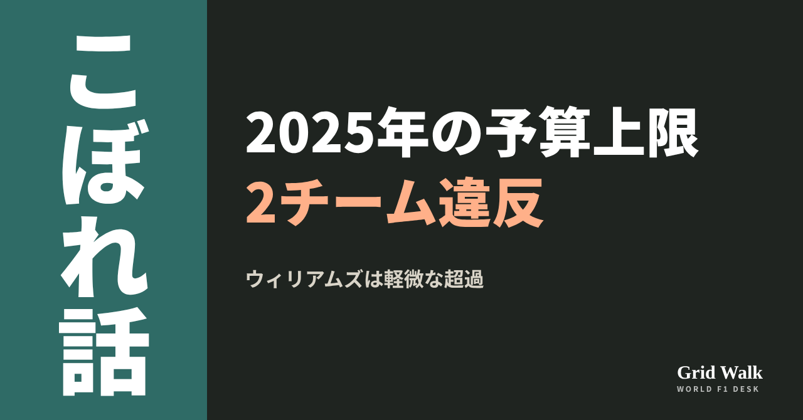<button class="cp dl" data-img="img/cost-cap-2025-williams-alpine-20261126.png" data-name="cost-cap-2025-williams-alpine-20261126_見出し画像.png">ダウンロード</button></li>
<li class="st"><div class="hd"><span class="no">2</span><b>タイトル</b></div><div class="bx" id="p1t">ウィリアムズに予算上限の軽微な超過　アルピーヌは手続き違反</div><button class="cp" data-plain="p1t">タイトルをコピー</button></li>
<li class="st"><div class="hd"><span class="no">3</span><b>本文</b></div><div class="bx tall" id="p1r"><p>2025年のF1の予算上限を、チームは守れていたのか。FIAは11月25日、その審査の結果を発表しました。11チームのうち9チームは問題なし。ウィリアムズは軽微な超過違反と手続き上の違反、アルピーヌは手続き上の違反とされました。</p><p>FIAの発表文へのリンクと、予算上限のルール解説はサイトで → <a href="https://f1gridwalk.github.io/lens/cost-cap-2025-williams-alpine-20261126/?utm_source=note&amp;utm_campaign=cost-cap-2025-williams-alpine-20261126">https://f1gridwalk.github.io/lens/cost-cap-2025-williams-alpine-20261126/?utm_source=note&amp;utm_campaign=cost-cap-2025-williams-alpine-20261126</a></p><p>審査したのは、FIAで予算上限を受け持つコスト・キャップ・アドミニストレーションです。2025年12月31日までの1年分の書類を、新しく加わったキャデラックをふくむ11チームと、パワーユニットのメーカー5社が出し、審査には8か月近くかかりました。メーカー5社は、すべて問題なしです。予算上限のしくみは、ルールブック https://f1gridwalk.github.io/deep/rules/cost-cap/ にまとめています。</p><h2>ウィリアムズは規則の読み方で</h2><p>FIAの発表文によると、ウィリアムズは意図せずに2つの違反をしました。原因は、財務規則を善意で解釈したことで、その点はFIAとの話し合いですでに解決したといいます。ウィリアムズはFIAが示した合意（違反を認める合意、ABA）を受け入れ、合意の日付は11月23日です。</p><blockquote><p>「ウィリアムズが、競技面でもほかの面でも、何らかの有利を求めた、あるいは得たという証拠はない」（FIAの発表文）</p></blockquote><p>FIAは、ウィリアムズが審査のあいだ協力的で、誠実だったとも書いています。2025年の審査の発表文の注記によると、軽微な超過は上限の5%未満の超過で、罰金や軽い競技上の罰の対象です。5%を超える重大な超過は、裁定パネルが認めれば、コンストラクターズのポイントが必ず差し引かれます。2026年の財務規則では、この境目は2%です。合意の条件は、FIAが要約をあわせて公表しています（ https://www.fia.com/news/accepted-breach-agreement-between-williams-grand-prix-engineering-limited-and-fia-breach-fia ）。違反と罰のこれまでの例は、ルールブック https://f1gridwalk.github.io/deep/rules/cost-cap-breach/ で。</p><h2>アルピーヌは上限の内側</h2><p>アルピーヌは手続き上の違反だけです。FIAによると、2025年の対象になる費用は上限を下回っていました。合意は11月11日。FIAは、アルピーヌが協力的かつ誠実で、求められた追加の情報や証拠を期限内に出そうと努めたと認めています。</p><blockquote><p>「アルピーヌが手続き上の違反によって不当な有利を求めた、あるいは得たという訴えも、証拠もない」（FIAの発表文）</p></blockquote><p>なお、イタリアのFormula1.itは11月25日の記事で、2チームとも11月11日に合意し、上限の額は守っていたと書いています。FIAの発表文では、ウィリアムズの合意は11月23日で、違反には軽微な超過がふくまれます。この記事のサイトの要約は https://f1gridwalk.github.io/news/it-formula1it-budget-cap-williams-alpine/ にあります。</p><h2>上限を変えたいチームで</h2><p>F1公式の順位表では、ウィリアムズは今季のコンストラクターズ9位で16点、アルピーヌは6位で87点です。ウィリアムズのジェームズ・ボウルズ代表は、下位のチームほど開発の余地を広げる、予算上限の追い上げ案を出しています（ https://f1gridwalk.github.io/news/en-therace-cost-cap-catchup/ 、上位4チームの得点の話は https://f1gridwalk.github.io/lens/budget-cap-two-tier-20261112/ ）。</p><p>編集部としては、超過の大きさより、規則の読み方でFIAとずれが生まれた点のほうが、これからの議論に響くと見ています。上限の作り直しを訴えるチーム自身が、財務規則の解釈でつまずいたからです。追い上げ案を話し合うときにも、規則の分かりやすさが問われそうです。</p><p><strong>意図しない解釈の違いから生まれた、小さな超過。予算上限の罰は、どこまで厳しくするべきだと思いますか？</strong></p><p>━━━━━━━━━━</p><p><strong>F1 Grid Walk では、世界のF1ニュースを毎日日本語でまとめています。</strong></p><p>海外の記事の要約を、毎日載せています。</p><p><a href="https://f1gridwalk.github.io/">https://f1gridwalk.github.io/</a></p><p>ほかの海外記事も読みたい方は、F1 Grid Walkへ。</p><p><a href="https://f1gridwalk.github.io/lens/cost-cap-2025-williams-alpine-20261126/">https://f1gridwalk.github.io/lens/cost-cap-2025-williams-alpine-20261126/</a></p><p>━━━━━━━━━━</p><p><a href="https://www.fia.com/news/fia-completes-its-review-compliance-2025-fia-formula-1-financial-regulations">出典：FIA（国際）</a></p><p><a href="https://www.fia.com/news/accepted-breach-agreement-between-williams-grand-prix-engineering-limited-and-fia-breach-fia">出典：FIA（国際）</a></p><p><a href="https://www.fia.com/news/accepted-breach-agreement-between-alpine-racing-limited-and-fia-procedural-breach-fia-formula-1">出典：FIA（国際）</a></p><p><a href="https://api.fia.com/system/files/documents/fia_2026_f1_regulations_-_section_d_financial_-_f1_teams_-_iss_07_-_2026-06-25.pdf">出典：FIA（国際）</a></p><p><a href="https://www.formula1.it/news/34226/1/budget-cap-due-team-sanzionati-la-fia-chiude-il-caso-sui-conti-2025">出典：Formula1.it（イタリア）</a></p><p><a href="https://www.formula1.com/en/results/2026/team">出典：F1公式サイト（イギリス）</a></p></div><button class="cp" data-rich="p1r">本文をコピー</button></li>
<li class="st"><div class="hd"><span class="no">4</span><b>ハッシュタグ</b></div><div class="bx" id="p1h">#F1 #F1jp #予算上限 #コストキャップ #ウィリアムズ #アルピーヌ #FIA #F1こぼれ話 #OFFGRID</div><button class="cp" data-plain="p1h">タグをコピー</button></li>
</ol><h3 class="xh">X</h3><ol class="steps">
<li class="st im"><div class="hd"><b>X用の画像</b><em>画像</em></div>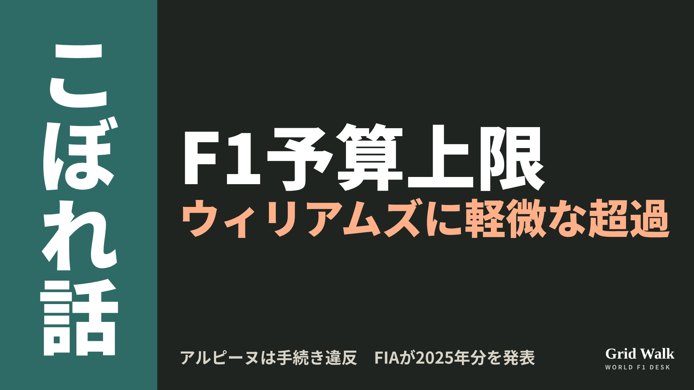<button class="cp dl" data-img="img/x_cost-cap-2025-williams-alpine-20261126.png" data-name="x_cost-cap-2025-williams-alpine-20261126.png">ダウンロード</button></li>
<li class="st"><div class="hd"><b>① noteをシェアするときの文</b></div><div class="bx" id="p1x0">FIAが2025年の予算上限の審査結果を発表。11チーム中9チームは問題なし、ウィリアムズは軽微な超過と手続き上の違反、アルピーヌは手続き上の違反で、どちらも合意で決着しました。noteにまとめました #F1jp #予算上限</div><button class="cp" data-plain="p1x0">コピー</button></li>
<li class="st"><div class="hd"><b>② ①への返信</b></div><div class="bx" id="p1x1">ほかの海外記事も読みたい方は、F1 Grid Walkへ。
https://f1gridwalk.github.io/lens/cost-cap-2025-williams-alpine-20261126/?utm_source=x&amp;utm_campaign=cost-cap-2025-williams-alpine-20261126</div><button class="cp" data-plain="p1x1">コピー</button></li>
<li class="st"><div class="hd"><b>③ ②への返信</b></div><div class="bx" id="p1x2">毎日の海外F1ニュースは、日本語でこちらにまとめています。
https://f1gridwalk.github.io/</div><button class="cp" data-plain="p1x2">コピー</button></li>
</ol></section><section class="part" id="p2"><h2><span class="tag">OFF GRID</span>発表では義務は済み、それでも6回目　クロフォードがアロンソの車に</h2><p class="sub">サイトに公開：11:49</p><ol class="steps">
<li class="st im"><div class="hd"><span class="no">1</span><b>見出し画像</b><em>画像</em></div>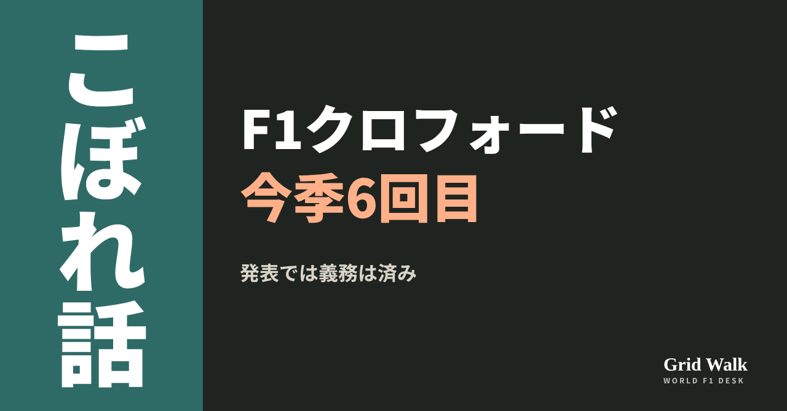<button class="cp dl" data-img="img/crawford-qatar-fp1-20261126.png" data-name="crawford-qatar-fp1-20261126_見出し画像.png">ダウンロード</button></li>
<li class="st"><div class="hd"><span class="no">2</span><b>タイトル</b></div><div class="bx" id="p2t">発表では義務は済み、それでも6回目　クロフォードがアロンソの車に</div><button class="cp" data-plain="p2t">タイトルをコピー</button></li>
<li class="st"><div class="hd"><span class="no">3</span><b>本文</b></div><div class="bx tall" id="p2r"><p>今週末の第22戦カタールGPで、アストンマーティンのフェルナンド・アロンソは、11月27日（金）の1回目のフリー走行（FP1）を休みます。代わりにアロンソの車に乗るのは、サードドライバーのジャック・クロフォード。イギリスのPlanetF1によると、これが今季6回目のFP1です。要約は https://f1gridwalk.github.io/news/en-planetf1-alonso-crawford-qatar-fp1/ にあります。</p><p>元の記事へのリンクと、ルーキーのFP1の決まりの解説はサイトで → <a href="https://f1gridwalk.github.io/lens/crawford-qatar-fp1-20261126/?utm_source=note&amp;utm_campaign=crawford-qatar-fp1-20261126">https://f1gridwalk.github.io/lens/crawford-qatar-fp1-20261126/?utm_source=note&amp;utm_campaign=crawford-qatar-fp1-20261126</a></p><p>チームは11月25日、Xでこう発表しました。</p><blockquote><p>「ジャック・クロフォードが、今週末のカタールGPのFP1で、またAMR26に乗ります」「先週末のラスベガスでは走行が限られたため、ジャックはフェルナンドの車でこのセッションを走ります」（アストンマーティンの投稿、Motorsport Week／イギリス）</p></blockquote><h2>ラスベガスは確認の1周だけ</h2><p>PlanetF1によると、クロフォードの今季のFP1は、日本、オーストリア、ベルギー、メキシコシティ、ラスベガスに続いて6回目になります。メキシコシティでは車に問題が出てコース脇に止まり、ラスベガスのFP1は大雨で流れました。</p><p>Motorsport Weekによると、ラスベガスでは雨のあとのコースが危ない状態で、まともなタイムを出せた人はいませんでした。クロフォードが走れたのは、確認のための1周だけだったといいます。タイム表が空だったあの1時間は、OFF GRID https://f1gridwalk.github.io/lens/vegas-fp1-rain-no-times-20261121/ で振り返っています。</p><h2>発表どおりなら、義務はメキシコまで</h2><p>FIAの2026年のスポーツ規則のB1.7.3は、各チームに、車1台ごとに2つの大会で、F1の決勝に2戦を超えて出ていないドライバーをFP1かFP2で使うよう求めています。2台あるので、チーム全体では年4回です。PlanetF1も、ルーキーを年4回のFP1で走らせる決まりがあると書いています。決まりの中身は、ルールブック https://f1gridwalk.github.io/deep/rules/rookie-fp1/ にあります。</p><p>今年のクロフォードの4回を、車ごとに数えてみます。チームの発表によると、日本GPはアロンソの車、オーストリアGPはランス・ストロールの車で、どちらも義務の走行として発表されました。F1公式によると、ベルギーGPはアロンソの車でした。メキシコシティGPはストロールの車で、この回でチームの今年の義務が終わる予定だったことは、DEEP GRID https://f1gridwalk.github.io/deep/rookie-fp1/ で整理したとおりです。これで車ごとに2回ずつです。ただ、メキシコシティの数え方は走行の前の発表にもとづきます。</p><p>発表どおりに数えれば、ラスベガスとカタールの2回は、義務の外の出番になります。規則のB1.7.4は、FP1の予定の開始の24時間前までにFIAに知らせ、1つのセッションで使うドライバーが2人までなら、義務とは別にドライバーを足してよいと定めています。チームの投稿が理由に挙げたのも、決まりではなく、ラスベガスで走れなかったことでした。</p><p>カタールは、最終戦アブダビGP（12月4〜6日）へ続く中東の2連戦の1戦目です（F1公式）。編集部としては、決まりの回数とは別に2戦続けてアロンソの金曜の1時間を回したことに、来年に向けてクロフォードに走る経験を積ませたいチームの考えが出ていると見ています。ただ、アロンソのFP1が1回減ることに変わりはありません。</p><p><strong>決まりの回数とは別に、レギュラーの走る時間を若手に渡す。アストンマーティンのこのやり方に、あなたは賛成ですか？</strong></p><p>━━━━━━━━━━</p><p><strong>F1 Grid Walk では、世界のF1ニュースを毎日日本語でまとめています。</strong></p><p>海外の記事の要約を、毎日載せています。</p><p><a href="https://f1gridwalk.github.io/">https://f1gridwalk.github.io/</a></p><p>ほかの海外記事も読みたい方は、F1 Grid Walkへ。</p><p><a href="https://f1gridwalk.github.io/lens/crawford-qatar-fp1-20261126/">https://f1gridwalk.github.io/lens/crawford-qatar-fp1-20261126/</a></p><p>━━━━━━━━━━</p><p><a href="https://www.planetf1.com/news/fernando-alonso-aston-martin-qatar-grand-prix-2026-fp1">出典：PlanetF1（イギリス）</a></p><p><a href="https://www.motorsportweek.com/2026/11/25/aston-martin-announce-qatar-fp1-reshuffle/">出典：Motorsport Week（イギリス）</a></p><p><a href="https://www.astonmartinf1.com/en-GB/news/announcement/jak-crawford-to-drive-in-fp1-at-japanese-grand-prix">出典：アストンマーティン公式サイト（イギリス）</a></p><p><a href="https://www.astonmartinf1.com/en-GB/news/announcement/jak-crawford-to-drive-in-fp1-at-austrian-grand-prix">出典：アストンマーティン公式サイト（イギリス）</a></p><p><a href="https://www.formula1.com/en/latest/article/crawford-set-for-next-fp1-run-with-aston-martin-in-belgium.6oeook4ebiSeLnc2XW3ybL">出典：F1公式サイト（イギリス）</a></p><p><a href="https://www.fia.com/system/files/documents/fia_2026_f1_regulations_-_section_b_sporting_-_iss_09_-_2026-10-01.pdf">出典：FIA（国際）</a></p><p><a href="https://www.formula1.com/en/racing/2026">出典：F1公式サイト（イギリス）</a></p></div><button class="cp" data-rich="p2r">本文をコピー</button></li>
<li class="st"><div class="hd"><span class="no">4</span><b>ハッシュタグ</b></div><div class="bx" id="p2h">#F1 #F1jp #アストンマーティン #クロフォード #アロンソ #ルーキー #フリー走行 #カタールGP #F1こぼれ話 #OFFGRID</div><button class="cp" data-plain="p2h">タグをコピー</button></li>
</ol><h3 class="xh">X</h3><ol class="steps">
<li class="st im"><div class="hd"><b>X用の画像</b><em>画像</em></div>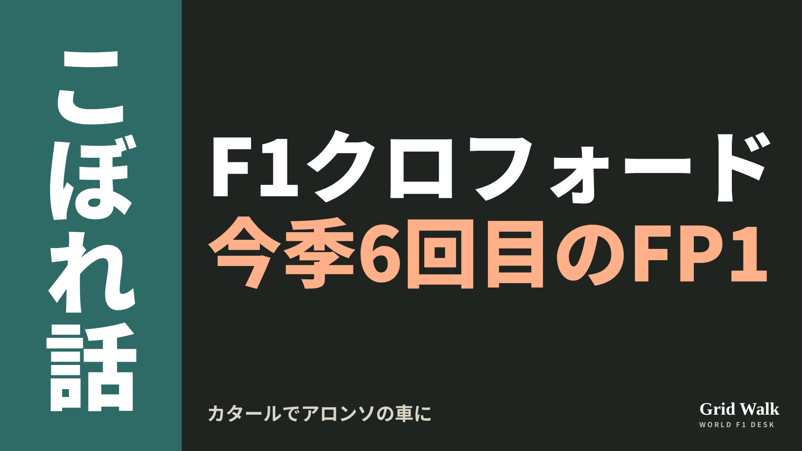<button class="cp dl" data-img="img/x_crawford-qatar-fp1-20261126.png" data-name="x_crawford-qatar-fp1-20261126.png">ダウンロード</button></li>
<li class="st"><div class="hd"><b>① noteをシェアするときの文</b></div><div class="bx" id="p2x0">カタールGPのFP1で、アロンソの車にクロフォードが乗ります。今季6回目。発表どおりに数えれば、チームのルーキー走行の義務はもう済んでいました。noteにまとめました #F1jp #アロンソ #カタールGP</div><button class="cp" data-plain="p2x0">コピー</button></li>
<li class="st"><div class="hd"><b>② ①への返信</b></div><div class="bx" id="p2x1">ほかの海外記事も読みたい方は、F1 Grid Walkへ。
https://f1gridwalk.github.io/lens/crawford-qatar-fp1-20261126/?utm_source=x&amp;utm_campaign=crawford-qatar-fp1-20261126</div><button class="cp" data-plain="p2x1">コピー</button></li>
<li class="st"><div class="hd"><b>③ ②への返信</b></div><div class="bx" id="p2x2">毎日の海外F1ニュースは、日本語でこちらにまとめています。
https://f1gridwalk.github.io/</div><button class="cp" data-plain="p2x2">コピー</button></li>
</ol></section><section class="part" id="p3"><h2><span class="tag">OFF GRID</span>アロンソ「遅いと感じたらやめる」　決めるのは年齢ではない</h2><p class="sub">サイトに公開：11:47</p><ol class="steps">
<li class="st im"><div class="hd"><span class="no">1</span><b>見出し画像</b><em>画像</em></div><button class="cp dl" data-img="img/alonso-retire-when-slow-20261126.png" data-name="alonso-retire-when-slow-20261126_見出し画像.png">ダウンロード</button></li>
<li class="st"><div class="hd"><span class="no">2</span><b>タイトル</b></div><div class="bx" id="p3t">アロンソ「遅いと感じたらやめる」　決めるのは年齢ではない</div><button class="cp" data-plain="p3t">タイトルをコピー</button></li>
<li class="st"><div class="hd"><span class="no">3</span><b>本文</b></div><div class="bx tall" id="p3r"><p>自分はいつF1をやめるのか。45歳のフェルナンド・アロンソは、その答えを年齢ではなく速さに置きました。アストンマーティンが11月24日にチームのサイトに載せた、15分の電話インタビューでのことです。</p><p>インタビューの元の記事へのリンクと、セパンで語った本音のコラムへの案内はサイトで → <a href="https://f1gridwalk.github.io/lens/alonso-retire-when-slow-20261126/?utm_source=note&amp;utm_campaign=alonso-retire-when-slow-20261126">https://f1gridwalk.github.io/lens/alonso-retire-when-slow-20261126/?utm_source=note&amp;utm_campaign=alonso-retire-when-slow-20261126</a></p><blockquote><p>「遅いと感じたらやめる。パスポートに書いてある年齢で決めるんじゃない」（アロンソ、アストンマーティン公式）</p></blockquote><h2>席を空けるべきだ、という声に</h2><p>注目され、将来を聞かれるのが好きな部分もあるのか、という質問への答えです。アロンソは、できれば聞かれたくないと言いつつ、うわさで気持ちが乱れることはないと話しています。</p><blockquote><p>「若い世代にもF1の席が必要で、僕やルイス（ハミルトン）のように長くグリッドにいるドライバーは去るべきだ、と言う人もいる。でも、モータースポーツはそういうふうにはできていない」（アロンソ、アストンマーティン公式）</p></blockquote><p>イタリアのFormula1.itは11月25日の記事で、世代交代を求める声の一つとしてラルフ・シューマッハーを挙げ、アロンソがそれに答えたと伝えています。Formula1.itによると、ラルフはスカイ・スポーツ・ドイツで、アロンソとハミルトンに若手へ道を空けるよう求めていました。ただし、Formula1.itも書くとおり、アロンソ本人はラルフの名前を挙げていません。サイトの要約は https://f1gridwalk.github.io/news/it-formula1it-alonso-pensione-batterli-tutti/ にあります。</p><p>アロンソの説明では、モータースポーツはテニスやサッカーほど体力に頼る競技ではなく、技術の環境に頼るところが大きいといいます。</p><blockquote><p>「速さを失ったとも、スタートでの反応が鈍ったとも、次のグランプリに来る意欲をなくしたとも感じていない」（アロンソ、アストンマーティン公式）</p></blockquote><h2>苦しい年のまま終わりたくない</h2><p>今年、本気でやめようと考えたことはあるか。そう聞かれたアロンソの答えは、ひと言のノーでした。今の規則には疑問もあり、車の走らせ方を受け入れるまで時間がかかったものの、やめると本気で感じたことは一度もなかったといいます。チームが苦しんでいることが続ける決断に関わっているのか、という問いには、こう答えています。</p><blockquote><p>「25年この世界にいて、やめる日には、それが自分にとって正しい時だと感じたい」「やめるときは、自分自身と折り合いがついていたい。今年のような苦しい結果やレースで終わりたくはない」（アロンソ、アストンマーティン公式）</p></blockquote><p>自信の裏づけとして挙げたのは、車体の進歩です。ドイツのMotorsport-Totalは、こう伝えています。</p><blockquote><p>「ブダペストの車体の改良は、決まったラップタイムを稼ぐはずだった。そして、そのとおりの差を稼いだ」「とても良い車が手に入るのは、時間の問題だと確信している」（アロンソ、Motorsport-Total／ドイツ）</p></blockquote><p>一方で、エンジンの面ではとても遅れていて、今のパワーユニットでは戦えないとも認めています。ホンダが改良に懸命に取り組んでいることは分かっている、とも話しました（Motorsport-Total）。それでも、自負は消えていません。</p><blockquote><p>「『普通の』状況で、前を走る車と同じような車があれば、今でも彼らに勝てると思う」（アロンソ、アストンマーティン公式）</p></blockquote><p>アストンマーティンは9月29日、2027年もアロンソとランス・ストロールの2人で戦うと発表しています。</p><p>編集部としては、この言葉は引退の日付ではなく、やめるときの物差しを示したものと見ています。物差しが速さなら、答えを出すのは来年の車とパワーユニットです。走り続ける理由をセパンで語ったときの言葉は、コラム https://f1gridwalk.github.io/lens/alonso-sepang-fire-20261003/ で。</p><p><strong>引退を決めるのは年齢か、それとも速さか。あなたはどちらだと思いますか？</strong></p><p>━━━━━━━━━━</p><p><strong>F1 Grid Walk では、世界のF1ニュースを毎日日本語でまとめています。</strong></p><p>海外の記事の要約を、毎日載せています。</p><p><a href="https://f1gridwalk.github.io/">https://f1gridwalk.github.io/</a></p><p>ほかの海外記事も読みたい方は、F1 Grid Walkへ。</p><p><a href="https://f1gridwalk.github.io/lens/alonso-retire-when-slow-20261126/">https://f1gridwalk.github.io/lens/alonso-retire-when-slow-20261126/</a></p><p>━━━━━━━━━━</p><p><a href="https://www.astonmartinf1.com/en-GB/news/feature/undercut-fernando-alonso-master-of-chaos">出典：アストンマーティン公式（イギリス）</a></p><p><a href="https://www.formula1.it/news/34219/1/alonso-risponde-a-chi-lo-vuole-in-pensione-posso-ancora-batterli-tutti">出典：Formula1.it（イタリア）</a></p><p><a href="https://www.motorsport-total.com/formel-1/news/nur-eine-frage-der-zeit-warum-alonso-zuversichtlich-ist-fuer-aston-martin-26112507">出典：Motorsport-Total.com（ドイツ）</a></p></div><button class="cp" data-rich="p3r">本文をコピー</button></li>
<li class="st"><div class="hd"><span class="no">4</span><b>ハッシュタグ</b></div><div class="bx" id="p3h">#F1 #F1jp #アロンソ #アストンマーティン #引退 #カタールGP #F1こぼれ話 #OFFGRID</div><button class="cp" data-plain="p3h">タグをコピー</button></li>
</ol><h3 class="xh">X</h3><ol class="steps">
<li class="st im"><div class="hd"><b>X用の画像</b><em>画像</em></div>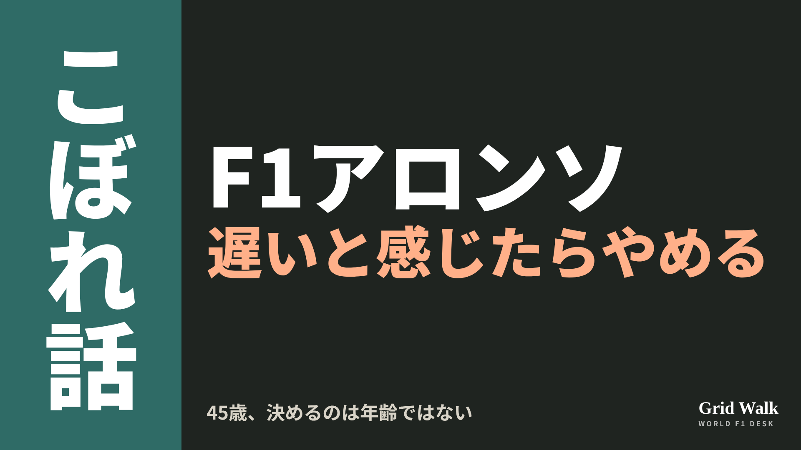<button class="cp dl" data-img="img/x_alonso-retire-when-slow-20261126.png" data-name="x_alonso-retire-when-slow-20261126.png">ダウンロード</button></li>
<li class="st"><div class="hd"><b>① noteをシェアするときの文</b></div><div class="bx" id="p3x0">45歳のアロンソが、やめる時を決めるのは年齢ではないと話しました。「遅いと感じたらやめる」。アストンマーティンのインタビューです。noteにまとめました #F1jp #アロンソ</div><button class="cp" data-plain="p3x0">コピー</button></li>
<li class="st"><div class="hd"><b>② ①への返信</b></div><div class="bx" id="p3x1">ほかの海外記事も読みたい方は、F1 Grid Walkへ。
https://f1gridwalk.github.io/lens/alonso-retire-when-slow-20261126/?utm_source=x&amp;utm_campaign=alonso-retire-when-slow-20261126</div><button class="cp" data-plain="p3x1">コピー</button></li>
<li class="st"><div class="hd"><b>③ ②への返信</b></div><div class="bx" id="p3x2">毎日の海外F1ニュースは、日本語でこちらにまとめています。
https://f1gridwalk.github.io/</div><button class="cp" data-plain="p3x2">コピー</button></li>
</ol></section><section class="part" id="p4"><h2><span class="tag">OFF GRID</span>フォーブスの試算でキャデラック30億ドル　1年目でハースを上回る</h2><p class="sub">サイトに公開：11:45</p><ol class="steps">
<li class="st im"><div class="hd"><span class="no">1</span><b>見出し画像</b><em>画像</em></div>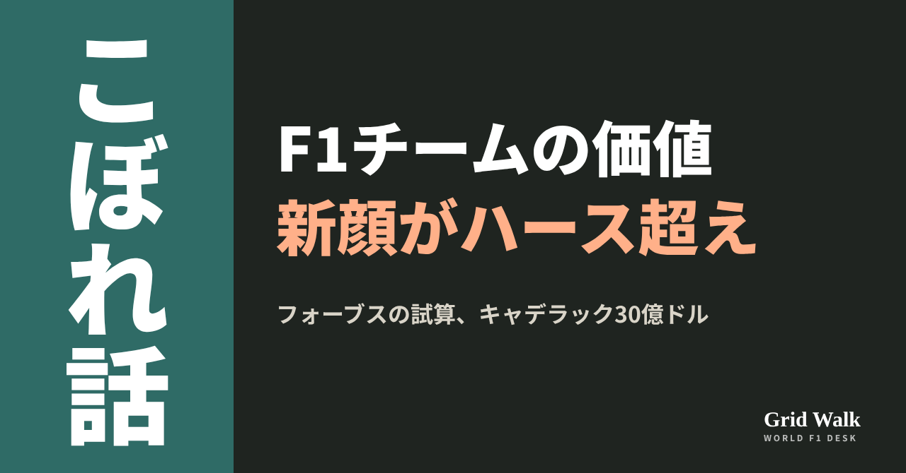<button class="cp dl" data-img="img/forbes-team-values-2026-20261126.png" data-name="forbes-team-values-2026-20261126_見出し画像.png">ダウンロード</button></li>
<li class="st"><div class="hd"><span class="no">2</span><b>タイトル</b></div><div class="bx" id="p4t">フォーブスの試算でキャデラック30億ドル　1年目でハースを上回る</div><button class="cp" data-plain="p4t">タイトルをコピー</button></li>
<li class="st"><div class="hd"><span class="no">3</span><b>本文</b></div><div class="bx tall" id="p4r"><p>アメリカの経済誌フォーブスが11月20日、2026年のF1全11チームの価値の試算を発表しました。1位はフェラーリの95億ドル。今季から参戦したキャデラックは30億ドルで10位に入り、11位のハース（28億ドル）を2億ドル上回りました。ドイツのMotorsport-Total.comも11月25日、ユーロに直した数字でこの試算を伝えています（キャデラック27.4億ユーロ、ハース25.5億ユーロ）。</p><p>試算の考え方を書いたルールブックと、元の記事へのリンクはサイトで → <a href="https://f1gridwalk.github.io/lens/forbes-team-values-2026-20261126/?utm_source=note&amp;utm_campaign=forbes-team-values-2026-20261126">https://f1gridwalk.github.io/lens/forbes-team-values-2026-20261126/?utm_source=note&amp;utm_campaign=forbes-team-values-2026-20261126</a></p><p>はじめに、これは試算です。実際に売り買いされた値段ではありません。フォーブスによると、公開・非公開の資料と関係者への取材をもとにした推計で、株の価値に正味の借金を足した企業価値の数字です。Motorsport-Total.comも、F1チームの持ち分はめったに持ち主が変わらないので、具体的な手がかりは少ないと書いています。評価額の考え方は、ルールブック https://f1gridwalk.github.io/deep/rules/team-valuation/ で。</p><h2>収入の数字がない10位</h2><p>フォーブスの表で、キャデラックだけは2025年の収入も営業利益も、前の年からの伸びも空欄です。去年は試算の対象ではなかったためです。一方のハースは、2025年の収入が1億9900万ドル、営業利益が1300万ドルとされています。価値は2025年の15億ドルから87%増え、11チームでいちばんの伸びでした。それでも順位はキャデラックの下です。</p><p>フォーブスは、財務の数字だけで見れば、新しいチームにこれだけの値段を払うのは説明しにくいと書いています。パドックでは、持ち主のマーク・ウォルターが34億ドルでチームを売りに出しているといううわさがある、としたうえでの見方です。キャデラックについては、名前を出さないF1関係者のこんな言葉も伝えています。</p><blockquote><p>「設備も、実績も、血統も、いちばん少ない」「このスポーツの一員であること、波の頂に乗ることの価値はある」（F1関係者、フォーブス／アメリカ）</p></blockquote><h2>収入の10倍という相場</h2><p>11チームの平均は52億ドルで、2025年の36億ドルから47%増えました。フォーブスによると、7年前は前の年の収入の2.3倍だった評価が、キャデラックを除く10チームでは平均10.3倍です。NFLは13.4倍、NBAは12.9倍です。大きなきっかけに挙げるのが、2021年に始まった予算上限（ルールブック https://f1gridwalk.github.io/deep/rules/cost-cap/ ）。2026年の上限は2億1500万ドルです。名前を出さない投資家は、こう話しています。</p><blockquote><p>「ちょっと変わった市場なんだ」「みんな、ほとんどいくらでも払うという感じになっている」（F1投資家、フォーブス／アメリカ）</p></blockquote><p>実際の取引では、フォーブスによると、8月にNFLジェッツの持ち主ウッディ・ジョンソンがアストンマーティンの少数株を買ったときの企業価値は47.5億ドルでした（取引を知る2人の話）。</p><h2>8日違いの別の試算</h2><p>イギリスのThe Raceのコラムは、スポーツビジネス媒体スポーティコとフォーブスの試算が8日違いで出て、フェラーリだけで13億ドル違うと指摘しています。どちらも推計です。</p><p>編集部としては、キャデラックの10位は、走りの実績よりも、数の限られたF1の席への値段だと見ています。Motorsport-Total.comも、投資家が集まる理由に、限られた参戦枠と予算上限を挙げています。キャデラックの株をめぐる動きは、11月5日のOFF GRID https://f1gridwalk.github.io/lens/cadillac-fsg-stake-20261105/ で。サイトの要約は https://f1gridwalk.github.io/news/de-motorsporttotal-forbes-teamwerte-2026/ にあります。</p><p><strong>1年目のキャデラックが、2016年から走るハースより高い。この試算に、あなたは納得しますか？</strong></p><p>━━━━━━━━━━</p><p><strong>F1 Grid Walk では、世界のF1ニュースを毎日日本語でまとめています。</strong></p><p>海外の記事の要約を、毎日載せています。</p><p><a href="https://f1gridwalk.github.io/">https://f1gridwalk.github.io/</a></p><p>ほかの海外記事も読みたい方は、F1 Grid Walkへ。</p><p><a href="https://f1gridwalk.github.io/lens/forbes-team-values-2026-20261126/">https://f1gridwalk.github.io/lens/forbes-team-values-2026-20261126/</a></p><p>━━━━━━━━━━</p><p><a href="https://www.forbes.com/sites/brettknight/2026/11/20/most-valuable-formula-1-teams-2026-valuations-rev-up-in-new-era-of-profitability/">出典：フォーブス（アメリカ）</a></p><p><a href="https://www.motorsport-total.com/formel-1/news/formel-1-als-milliardenbusiness-was-die-elf-teams-2026-wert-sind-26112505">出典：Motorsport-Total.com（ドイツ）</a></p><p><a href="https://www.the-race.com/business/formula-1-team-values-jump-47-in-2026-as-they-near-10bn/">出典：The Race（イギリス）</a></p></div><button class="cp" data-rich="p4r">本文をコピー</button></li>
<li class="st"><div class="hd"><span class="no">4</span><b>ハッシュタグ</b></div><div class="bx" id="p4h">#F1 #F1jp #キャデラック #ハース #フォーブス #F1ビジネス #チームの価値 #カタールGP #F1こぼれ話 #OFFGRID</div><button class="cp" data-plain="p4h">タグをコピー</button></li>
</ol><h3 class="xh">X</h3><ol class="steps">
<li class="st im"><div class="hd"><b>X用の画像</b><em>画像</em></div>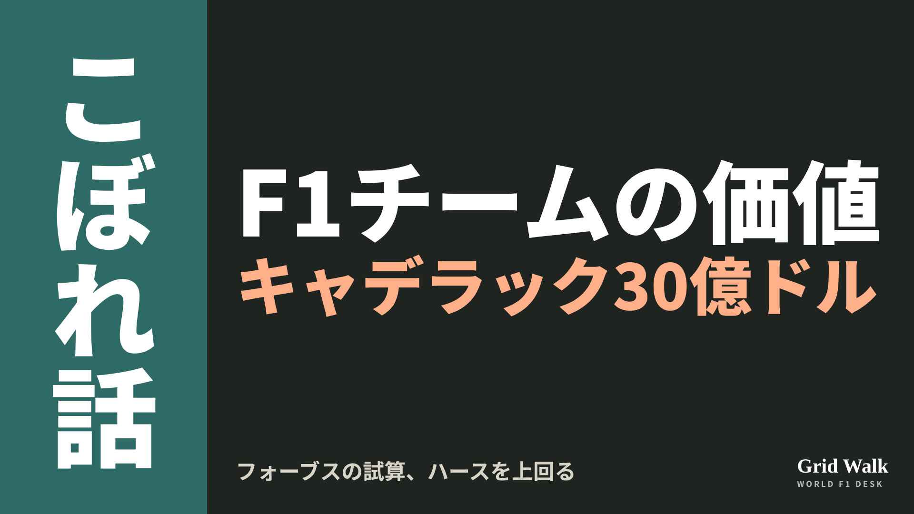<button class="cp dl" data-img="img/x_forbes-team-values-2026-20261126.png" data-name="x_forbes-team-values-2026-20261126.png">ダウンロード</button></li>
<li class="st"><div class="hd"><b>① noteをシェアするときの文</b></div><div class="bx" id="p4x0">フォーブスの試算で、今季参戦のキャデラックは30億ドル。ハースを上回りました。首位はフェラーリ。ただし実際の取引の値段ではありません。noteにまとめました #F1jp #キャデラック #ハース</div><button class="cp" data-plain="p4x0">コピー</button></li>
<li class="st"><div class="hd"><b>② ①への返信</b></div><div class="bx" id="p4x1">ほかの海外記事も読みたい方は、F1 Grid Walkへ。
https://f1gridwalk.github.io/lens/forbes-team-values-2026-20261126/?utm_source=x&amp;utm_campaign=forbes-team-values-2026-20261126</div><button class="cp" data-plain="p4x1">コピー</button></li>
<li class="st"><div class="hd"><b>③ ②への返信</b></div><div class="bx" id="p4x2">毎日の海外F1ニュースは、日本語でこちらにまとめています。
https://f1gridwalk.github.io/</div><button class="cp" data-plain="p4x2">コピー</button></li>
</ol></section><section class="part" id="p5"><h2><span class="tag">OFF GRID</span>「計測点で先頭の車でいたいか」　レッドブル、最終盤に首位を譲る案も</h2><p class="sub">サイトに公開：11:43</p><ol class="steps">
<li class="st im"><div class="hd"><span class="no">1</span><b>見出し画像</b><em>画像</em></div>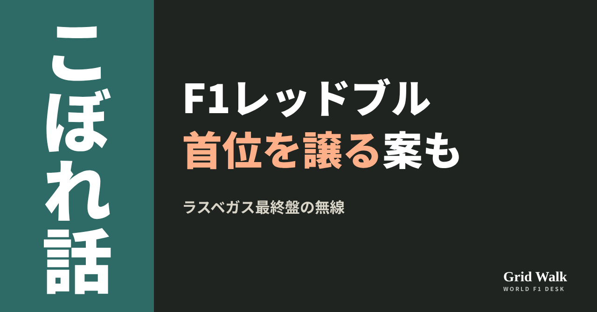<button class="cp dl" data-img="img/redbull-radio-lead-choice-20261126.png" data-name="redbull-radio-lead-choice-20261126_見出し画像.png">ダウンロード</button></li>
<li class="st"><div class="hd"><span class="no">2</span><b>タイトル</b></div><div class="bx" id="p5t">「計測点で先頭の車でいたいか」　レッドブル、最終盤に首位を譲る案も</div><button class="cp" data-plain="p5t">タイトルをコピー</button></li>
<li class="st"><div class="hd"><span class="no">3</span><b>本文</b></div><div class="bx tall" id="p5r"><p>ふつうのレースなら、残り2周で首位をわざと手放すことは考えません。ところが第21戦ラスベガスGPのレッドブルは、それを本気で考えていたと、ドイツのMotorsport-Total.comが11月25日に伝えました。49周目、フェルスタッペンのレースエンジニア、トム・ハートは無線でこう呼びかけたといいます。</p><p>元の記事へのリンクと、オーバーテイクモードの仕組みの解説はサイトで → <a href="https://f1gridwalk.github.io/lens/redbull-radio-lead-choice-20261126/?utm_source=note&amp;utm_campaign=redbull-radio-lead-choice-20261126">https://f1gridwalk.github.io/lens/redbull-radio-lead-choice-20261126/?utm_source=note&amp;utm_campaign=redbull-radio-lead-choice-20261126</a></p><blockquote><p>「計測点で先頭の車でいたいかどうか、ちょっと考えてみて、マックス」（ハート、チーム無線。Motorsport-Total.com／ドイツ）</p></blockquote><p>記事によると、このときアントネッリは1.2秒後ろ、ピアストリは1.9秒後ろでした。記事の要約は https://f1gridwalk.github.io/news/de-motorsporttotal-redbull-funk-vegas-letzte-runde/ にあります。</p><h2>先頭で通ると、後ろが得をする</h2><p>なぜ首位を譲る話になるのか。記事の説明では、ラスベガスのオーバーテイクモードの計測点は1つだけで、16コーナーのシケインのすぐ先にあります。ここで前の車の1秒以内にいた車は、次の周に0.5メガジュールの電気を余分に使えます。そのうえ、ストリップ沿いの1.9kmの直線はスリップストリームがよく効きます。最後の周の前に先頭で計測点を通れば、ゴールの前にかっこうの獲物になりかねない、と記事は書いています。仕組みは用語集 https://f1gridwalk.github.io/deep/rules/overtake-mode/ で。</p><p>フェルスタッペンは39周目から最終周の計画をチームに求め、46周目にハートは、今の電気の使い方より良い案はないと答えていました（コラム https://f1gridwalk.github.io/lens/antonelli-last-lap-fourth-20261122/ ）。記事によると、47周目にハートは、上位5台が1秒の中にいると伝えています。48周目には、ジョージ・ラッセルがアントネッリを攻めて5コーナーでブレーキをロックさせ、バリアに当たりました。F1公式の結果では9位です。こうして、フェルスタッペンを脅かせるのはアントネッリだけになりました。</p><h2>後ろに残ろうとしたアントネッリ</h2><p>アントネッリの側も、同じことを考えていました。記事によると、アントネッリは計測点でフェルスタッペンの後ろにいて、最終周に余分の電気を使うつもりでした。そのために49周目、14コーナーの手前でアクセルを戻し、勢いを保とうと軽く踏み直します。このふだんと違う踏み方で、車の電気を管理するソフトが混乱しました。コーナーを出たとき電池の電気が残っておらず、直線で2秒近くを失ったと記事は伝えています。その間に、マクラーレンの2台に抜かれました。</p><p>記事は、フェルスタッペンがアントネッリをわざと前に出す危ない手を、結局取らずにすんだと書いています。50周目に入ると、ハートは最終周であること、すぐ後ろがノリスで、ピアストリは2.4秒後ろだと伝え、14コーナーの立ち上がりではいずれにしてもブーストを使えるとも付け加えたといいます（ブーストは https://f1gridwalk.github.io/deep/rules/boost-recharge/ で）。</p><p>記事によると、フェルスタッペンは最終周を1分36秒450で走りました。F1公式の結果では、2位ノリスとの差は0.639秒です。F1公式の順位では、フェルスタッペンは304点でドライバーズ2位、3位のルイス・ハミルトン（267点）とは37点差。残りは11月27〜29日の第22戦カタールGPと、12月4〜6日の第23戦アブダビGPです。</p><h2>守るか、譲るか</h2><p>編集部としては、2026年の規則では、計測点の手前では先頭にいることが必ずしも得にならず、先頭を守る側と追う側が同じ駆け引きをしていたことが、この無線からよく見えると見ています。記事の説明では、結果を分けたのは、後ろに残ろうとしたアントネッリのアクセル操作でした。最終周の準備については、メキース代表の話をコラム https://f1gridwalk.github.io/lens/mekies-verstappen-on-purpose-20261123/ で紹介しています。</p><p><strong>残り2周、あなたがフェルスタッペンなら、首位を守りますか？ それとも計測点の前でわざと譲りますか？</strong></p><p>━━━━━━━━━━</p><p><strong>F1 Grid Walk では、世界のF1ニュースを毎日日本語でまとめています。</strong></p><p>海外の記事の要約を、毎日載せています。</p><p><a href="https://f1gridwalk.github.io/">https://f1gridwalk.github.io/</a></p><p>ほかの海外記事も読みたい方は、F1 Grid Walkへ。</p><p><a href="https://f1gridwalk.github.io/lens/redbull-radio-lead-choice-20261126/">https://f1gridwalk.github.io/lens/redbull-radio-lead-choice-20261126/</a></p><p>━━━━━━━━━━</p><p><a href="https://www.motorsport-total.com/formel-1/news/verstappen-sieg-in-las-vegas-was-die-red-bull-funksprueche-offenbaren-26112502">出典：Motorsport-Total.com（ドイツ）</a></p><p><a href="https://www.formula1.com/en/results/2026/races/1300/las-vegas/race-result">出典：F1公式サイト（イギリス）</a></p><p><a href="https://www.formula1.com/en/results/2026/drivers">出典：F1公式サイト（イギリス）</a></p><p><a href="https://www.formula1.com/en/racing/2026">出典：F1公式サイト（イギリス）</a></p></div><button class="cp" data-rich="p5r">本文をコピー</button></li>
<li class="st"><div class="hd"><span class="no">4</span><b>ハッシュタグ</b></div><div class="bx" id="p5h">#F1 #F1jp #レッドブル #フェルスタッペン #アントネッリ #ラスベガスGP #オーバーテイクモード #チーム無線 #F1こぼれ話 #OFFGRID</div><button class="cp" data-plain="p5h">タグをコピー</button></li>
</ol><h3 class="xh">X</h3><ol class="steps">
<li class="st im"><div class="hd"><b>X用の画像</b><em>画像</em></div>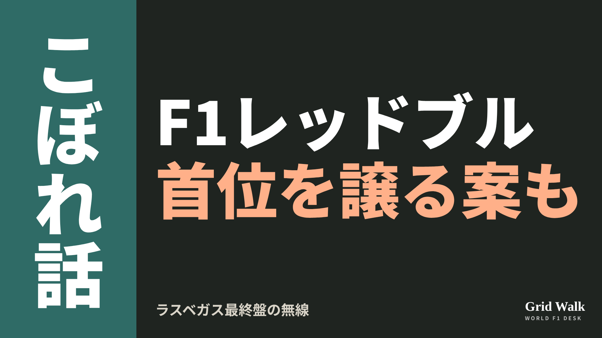<button class="cp dl" data-img="img/x_redbull-radio-lead-choice-20261126.png" data-name="x_redbull-radio-lead-choice-20261126.png">ダウンロード</button></li>
<li class="st"><div class="hd"><b>① noteをシェアするときの文</b></div><div class="bx" id="p5x0">ラスベガスGPの残り2周、レッドブルはフェルスタッペンに「計測点で先頭の車でいたいか」と無線。首位をわざと譲る道もあったと、独Motorsport-Total.comが読み解きました。noteにまとめました #F1jp #レッドブル</div><button class="cp" data-plain="p5x0">コピー</button></li>
<li class="st"><div class="hd"><b>② ①への返信</b></div><div class="bx" id="p5x1">ほかの海外記事も読みたい方は、F1 Grid Walkへ。
https://f1gridwalk.github.io/lens/redbull-radio-lead-choice-20261126/?utm_source=x&amp;utm_campaign=redbull-radio-lead-choice-20261126</div><button class="cp" data-plain="p5x1">コピー</button></li>
<li class="st"><div class="hd"><b>③ ②への返信</b></div><div class="bx" id="p5x2">毎日の海外F1ニュースは、日本語でこちらにまとめています。
https://f1gridwalk.github.io/</div><button class="cp" data-plain="p5x2">コピー</button></li>
</ol></section><section class="part" id="p6"><h2><span class="tag">OFF GRID</span>ステラ「空気抵抗が多すぎた」　マクラーレン、直線の遅さは8速にも</h2><p class="sub">サイトに公開：11:41</p><ol class="steps">
<li class="st im"><div class="hd"><span class="no">1</span><b>見出し画像</b><em>画像</em></div><button class="cp dl" data-img="img/mclaren-top-speed-drag-gear-20261126.png" data-name="mclaren-top-speed-drag-gear-20261126_見出し画像.png">ダウンロード</button></li>
<li class="st"><div class="hd"><span class="no">2</span><b>タイトル</b></div><div class="bx" id="p6t">ステラ「空気抵抗が多すぎた」　マクラーレン、直線の遅さは8速にも</div><button class="cp" data-plain="p6t">タイトルをコピー</button></li>
<li class="st"><div class="hd"><span class="no">3</span><b>本文</b></div><div class="bx tall" id="p6r"><p>第21戦ラスベガスGPで2台そろって表彰台に上がったマクラーレンは、直線では苦しんでいました。その理由を、アンドレア・ステラ代表が3つに分けて説明したと、イギリスのPlanetF1が11月25日に伝えています。サイトの要約は https://f1gridwalk.github.io/news/en-planetf1-mclaren-vegas-top-speed-deficit/ にあります。</p><p>元の記事へのリンクと、空気抵抗やギアボックスの用語の解説はサイトで → <a href="https://f1gridwalk.github.io/lens/mclaren-top-speed-drag-gear-20261126/?utm_source=note&amp;utm_campaign=mclaren-top-speed-drag-gear-20261126">https://f1gridwalk.github.io/lens/mclaren-top-speed-drag-gear-20261126/?utm_source=note&amp;utm_campaign=mclaren-top-speed-drag-gear-20261126</a></p><blockquote><p>「今日は3つの要因を挙げたい」（ステラ、PlanetF1／イギリス）</p></blockquote><h2>1つ目は、パワーユニットではなく空気抵抗</h2><p>PlanetF1によると、ステラ代表は最高速の足りなさを、パワーユニットではなく、今季のMCL40という車の側の問題と見ています。</p><blockquote><p>「車には、もともと十分な最高速がなかった。これはパワーユニットとはまったく関係がない。（メルセデスの）HPPのどの車でも同じだからだ」「単純に、空気抵抗が多すぎた」（ステラ、PlanetF1／イギリス）</p></blockquote><p>空気抵抗のしくみは、ルールブック https://f1gridwalk.github.io/deep/rules/drag/ で。</p><h2>2つ目は、短すぎる8速</h2><blockquote><p>「8速が短すぎるという代償を払っている。とくに誰かの後ろを走っているときに問題になる」「回転数が上がりすぎて、出力が落ちすぎる」（ステラ、PlanetF1／イギリス）</p></blockquote><p>ステラ代表はレースの前からギア比を気にしていました（コラム https://f1gridwalk.github.io/lens/mclaren-vegas-redemption-20261121/ ）。ギア比の決まりはルールブック https://f1gridwalk.github.io/deep/rules/gearbox/ で。</p><h2>3つ目は、電気の出し方</h2><p>F1公式のスタート順で、ランド・ノリスは3番手でした。PlanetF1によると、電気の出し方をうまく合わせられず、12周目には11位まで下がっています。ノリスは予選のあとにも、直線の遅さを強い言葉で嘆いていたと記事は書いています。オスカー・ピアストリは、パワーユニットの交換による罰で17番手からのスタートでした。</p><blockquote><p>「エンジニアたちは、ランドに何が起きていたのか、なぜ順位を落としていたのか、そして順位を上げていたオスカーでは何がうまくいっていたのかを突き止めた」「だから今季のこれまでのどのときよりも、ドライバーと一緒に、パワーユニットの電気の出し方を最適化する作業をした」（ステラ、PlanetF1／イギリス）</p></blockquote><blockquote><p>「空気抵抗とギア比は、今日は問題だった。でも、オスカーとランドとエンジニアのいい仕事が、こうした限界をある程度埋めてくれた」（ステラ、PlanetF1／イギリス）</p></blockquote><p>F1公式の結果では、マックス・フェルスタッペンが優勝し、ノリスが2位、ピアストリが3位でした。PlanetF1によると、マクラーレンのダブル表彰台は今季2回目で、マイアミ以来です。</p><p>ステラ代表は、2人の走り方もほめています。</p><blockquote><p>「レースでの戦いやすさを、とても心配していた。さっきも言ったように、最高速とギア比の組み合わせのせいだ」「それでもランドとオスカーは、スリップストリームの使い方まで見つけた」「ほかの車ならスリップから横に出て追い抜きを終えてもいい場面で、2人は、やめておこう、どうせ抜けないから、と気づいたんだ」（ステラ、PlanetF1／イギリス）</p></blockquote><blockquote><p>「2人が引き出した結果と、チームが用意できた車の力を比べれば、オスカーにとってもランドにとっても、最高のレースの一つだと思う」（ステラ、PlanetF1／イギリス）</p></blockquote><p>編集部としては、ラスベガスの2つの表彰台は、車の速さより使い方で取ったものだと見ています。代表自身が空気抵抗とギア比を問題と認め、それを埋めたのはドライバーとエンジニアの作業だと話しているからです。F1公式の順位では、4位のマクラーレンは431点で、3位のレッドブルとは9点差。残りは11月27〜29日のカタールと、12月4〜6日のアブダビの2戦です。</p><p><strong>速さの足りない車で、あえて抜きにいかずに後ろにつく。この走り方を、あなたは見ていて面白いと思いますか？</strong></p><p>━━━━━━━━━━</p><p><strong>F1 Grid Walk では、世界のF1ニュースを毎日日本語でまとめています。</strong></p><p>海外の記事の要約を、毎日載せています。</p><p><a href="https://f1gridwalk.github.io/">https://f1gridwalk.github.io/</a></p><p>ほかの海外記事も読みたい方は、F1 Grid Walkへ。</p><p><a href="https://f1gridwalk.github.io/lens/mclaren-top-speed-drag-gear-20261126/">https://f1gridwalk.github.io/lens/mclaren-top-speed-drag-gear-20261126/</a></p><p>━━━━━━━━━━</p><p><a href="https://www.planetf1.com/news/mclaren-las-vegas-top-speed-deficit-revealed">出典：PlanetF1（イギリス）</a></p><p><a href="https://www.formula1.com/en/results/2026/races/1300/las-vegas/starting-grid">出典：F1公式サイト（イギリス）</a></p><p><a href="https://www.formula1.com/en/results/2026/races/1300/las-vegas/race-result">出典：F1公式サイト（イギリス）</a></p><p><a href="https://www.formula1.com/en/results/2026/team">出典：F1公式サイト（イギリス）</a></p><p><a href="https://www.formula1.com/en/racing/2026">出典：F1公式サイト（イギリス）</a></p></div><button class="cp" data-rich="p6r">本文をコピー</button></li>
<li class="st"><div class="hd"><span class="no">4</span><b>ハッシュタグ</b></div><div class="bx" id="p6h">#F1 #F1jp #マクラーレン #ステラ #ノリス #ピアストリ #ラスベガスGP #F1技術 #F1こぼれ話 #OFFGRID</div><button class="cp" data-plain="p6h">タグをコピー</button></li>
</ol><h3 class="xh">X</h3><ol class="steps">
<li class="st im"><div class="hd"><b>X用の画像</b><em>画像</em></div>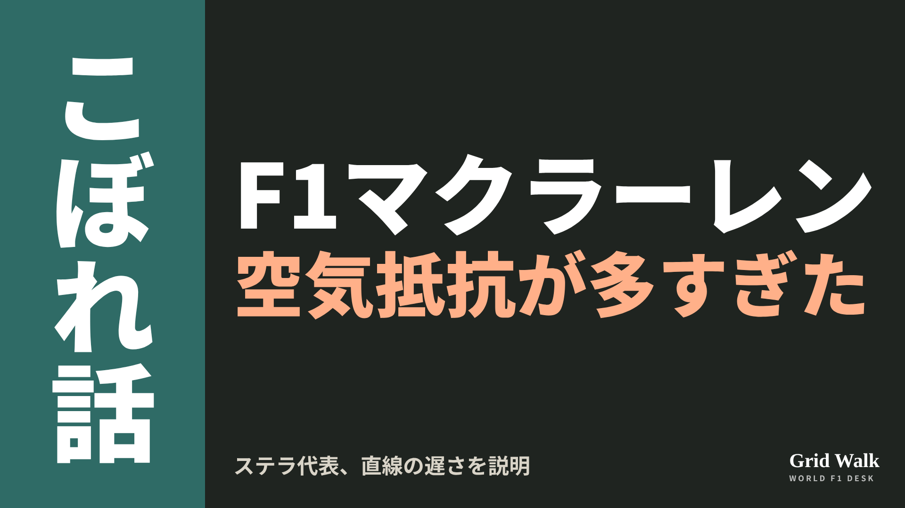<button class="cp dl" data-img="img/x_mclaren-top-speed-drag-gear-20261126.png" data-name="x_mclaren-top-speed-drag-gear-20261126.png">ダウンロード</button></li>
<li class="st"><div class="hd"><b>① noteをシェアするときの文</b></div><div class="bx" id="p6x0">ラスベガスで直線が遅かったマクラーレン。ステラ代表は、原因はパワーユニットではなく「空気抵抗が多すぎた」と、短すぎた8速だと説明しています。noteにまとめました #F1jp #マクラーレン</div><button class="cp" data-plain="p6x0">コピー</button></li>
<li class="st"><div class="hd"><b>② ①への返信</b></div><div class="bx" id="p6x1">ほかの海外記事も読みたい方は、F1 Grid Walkへ。
https://f1gridwalk.github.io/lens/mclaren-top-speed-drag-gear-20261126/?utm_source=x&amp;utm_campaign=mclaren-top-speed-drag-gear-20261126</div><button class="cp" data-plain="p6x1">コピー</button></li>
<li class="st"><div class="hd"><b>③ ②への返信</b></div><div class="bx" id="p6x2">毎日の海外F1ニュースは、日本語でこちらにまとめています。
https://f1gridwalk.github.io/</div><button class="cp" data-plain="p6x2">コピー</button></li>
</ol></section><section class="part" id="p7"><h2><span class="tag">OFF GRID</span>ハータ、キャデラックのリザーブ役を当面断ったと独誌　次は2028年か</h2><p class="sub">サイトに公開：11:39</p><ol class="steps">
<li class="st im"><div class="hd"><span class="no">1</span><b>見出し画像</b><em>画像</em></div>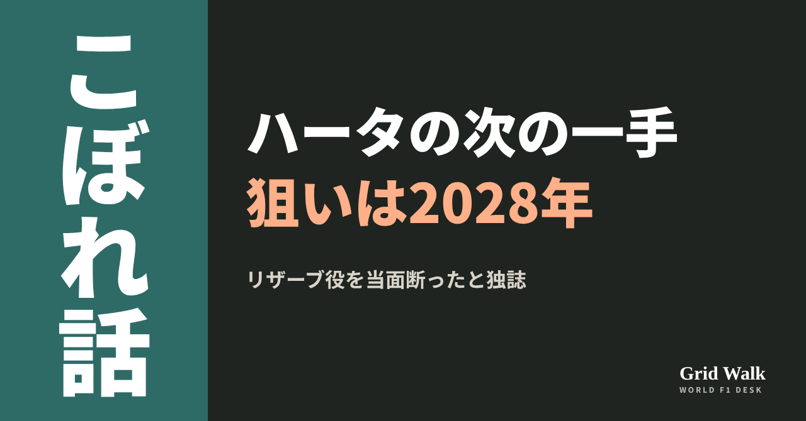<button class="cp dl" data-img="img/herta-cadillac-reserve-2028-20261126.png" data-name="herta-cadillac-reserve-2028-20261126_見出し画像.png">ダウンロード</button></li>
<li class="st"><div class="hd"><span class="no">2</span><b>タイトル</b></div><div class="bx" id="p7t">ハータ、キャデラックのリザーブ役を当面断ったと独誌　次は2028年か</div><button class="cp" data-plain="p7t">タイトルをコピー</button></li>
<li class="st"><div class="hd"><span class="no">3</span><b>本文</b></div><div class="bx tall" id="p7r"><p>ドイツのMotorsport-Total.comが、コルトン・ハータはキャデラックの2027年のリザーブドライバーの役を当面断った、と報じました。同誌が独自に得た情報として書いたもので、チームや本人の発表ではありません。サイトの要約は https://f1gridwalk.github.io/news/de-motorsporttotal-herta-cadillac-reserve-2028/ にあります。</p><p>Motorsport-Total.comの元の記事と、ハータのF1挑戦をたどる読み解きへのリンクはサイトで → <a href="https://f1gridwalk.github.io/lens/herta-cadillac-reserve-2028-20261126/?utm_source=note&amp;utm_campaign=herta-cadillac-reserve-2028-20261126">https://f1gridwalk.github.io/lens/herta-cadillac-reserve-2028-20261126/?utm_source=note&amp;utm_campaign=herta-cadillac-reserve-2028-20261126</a></p><p>キャデラックは11月18日、2027年もバルテリ・ボッタスとセルジオ・ペレスの2人で戦うと発表しています。リザーブとテストドライバーは追って発表するとしていました。発表の中身は読み解き https://f1gridwalk.github.io/lens/cadillac-bottas-2027-20261119/ にまとめています。</p><h2>記事がたどる、ハータの1年</h2><p>記事によると、インディカーで9勝したハータは、姉妹チームのアンドレッティでの席を手放してF1を目指しました。記事によると、キャデラックの過半数を持つTWGは、そう遠くないうちに自分たちの車にアメリカ人のドライバーを乗せたいと考えています。F2ではピレリのタイヤに慣れることに取り組み、キャデラックには古いF1の車がないため、チームはアルピーヌのテスト車を借りて走らせたといいます。</p><p>スーパーライセンスの40点を集めるため、フリー走行にも乗りました。6回目となったブラジルで、ようやく必要な点に届いています。仕組みはルールブック https://f1gridwalk.github.io/deep/rules/super-licence/ と、DEEP GRID https://f1gridwalk.github.io/deep/super-licence-points/ にまとめています。</p><p>同誌によると、ちょうどそのころ、タウリスCEOとマルチン・ブコウスキー代表は、ボッタスを残し、ハータを2027年のリザーブにする考えに傾いていきました。ハータはハイテックとのF2も最後まで走らず、カタールとアブダビを欠場します（ https://f1gridwalk.github.io/lens/herta-leaves-f2-early-20261124/ ）。</p><h2>ラスベガスで、タウリスCEOが語ったこと</h2><p>記事は、ダン・タウリスCEOがラスベガスで話した言葉を伝えています。ハータとの話し合いは難しいものだったと振り返り、2028年の席は空いていると話しました。記事は、ハータがこの1年に選んだ道についての、タウリスCEOの次の言葉も伝えています。</p><blockquote><p>「コルトンがそもそもこのリスクを取ったこと自体、とても勇気のいることだったと、私はわかっている」（タウリスCEO、Motorsport-Total.com／ドイツ）</p></blockquote><h2>2028年は、最初の機会で最後の機会か</h2><p>記事は、2028年がハータにとって鍵の年になると書いています。フルタイムのF1の席に就ける、現実的にいちばん早い機会である一方、最後の現実的な機会にもなりうるというのです。リザーブは、長くレースを走らずにいると、キャリアの勢いをすぐに失いがちだ、というのが記事の見方です。</p><p>インディカーに戻る道も、すぐには開いていないと記事は見ています。2027年のフルタイムの席は、もう残っていないようだといいます。一方でインディカーは2028年に、ダラーラの新しい車IR-28を入れ、より力のある2.4リッターのV6ツインターボを積みます。それで勢力図が入れ替わるかもしれない、とも書いています。</p><p>編集部としては、報道のとおりなら、ハータはチームの中でリザーブとして2028年を待つ道を、少なくともいまは選んでいないことになると見ています。ただし、この記事にハータ本人の言葉はありません。インディカーを離れたときの本人の言葉は、読み解き https://f1gridwalk.github.io/topics/herta-this-is-my-last-shot/ で追っています。</p><p><strong>F1チームの中でリザーブとして待つのと、ほかのシリーズでレースを走り続けるのと。2028年のF1の席に近いのは、どちらだと思いますか？</strong></p><p>━━━━━━━━━━</p><p><strong>F1 Grid Walk では、世界のF1ニュースを毎日日本語でまとめています。</strong></p><p>海外の記事の要約を、毎日載せています。</p><p><a href="https://f1gridwalk.github.io/">https://f1gridwalk.github.io/</a></p><p>ほかの海外記事も読みたい方は、F1 Grid Walkへ。</p><p><a href="https://f1gridwalk.github.io/lens/herta-cadillac-reserve-2028-20261126/">https://f1gridwalk.github.io/lens/herta-cadillac-reserve-2028-20261126/</a></p><p>━━━━━━━━━━</p><p><a href="https://www.motorsport-total.com/formel-1/news/warum-colton-herta-seinen-formel-1-traum-schon-jetzt-aufgeben-koennte-26112503">出典：Motorsport-Total.com（ドイツ）</a></p></div><button class="cp" data-rich="p7r">本文をコピー</button></li>
<li class="st"><div class="hd"><span class="no">4</span><b>ハッシュタグ</b></div><div class="bx" id="p7h">#F1 #F1jp #コルトンハータ #キャデラック #インディカー #スーパーライセンス #カタールGP #F1こぼれ話 #OFFGRID</div><button class="cp" data-plain="p7h">タグをコピー</button></li>
</ol><h3 class="xh">X</h3><ol class="steps">
<li class="st im"><div class="hd"><b>X用の画像</b><em>画像</em></div>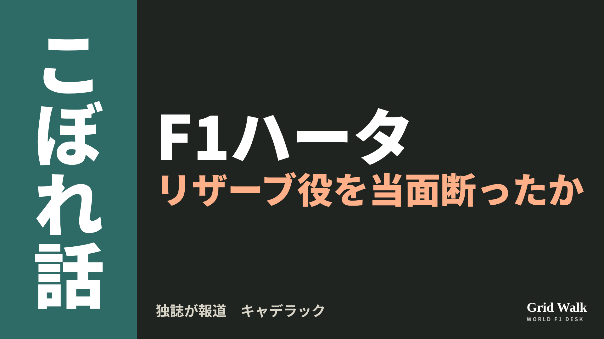<button class="cp dl" data-img="img/x_herta-cadillac-reserve-2028-20261126.png" data-name="x_herta-cadillac-reserve-2028-20261126.png">ダウンロード</button></li>
<li class="st"><div class="hd"><b>① noteをシェアするときの文</b></div><div class="bx" id="p7x0">コルトン・ハータが、キャデラックの2027年のリザーブ役を当面断ったと、独Motorsport-Total.comが報じました。2028年の席は空いているとタウリスCEO。noteにまとめました #F1jp #キャデラック</div><button class="cp" data-plain="p7x0">コピー</button></li>
<li class="st"><div class="hd"><b>② ①への返信</b></div><div class="bx" id="p7x1">ほかの海外記事も読みたい方は、F1 Grid Walkへ。
https://f1gridwalk.github.io/lens/herta-cadillac-reserve-2028-20261126/?utm_source=x&amp;utm_campaign=herta-cadillac-reserve-2028-20261126</div><button class="cp" data-plain="p7x1">コピー</button></li>
<li class="st"><div class="hd"><b>③ ②への返信</b></div><div class="bx" id="p7x2">毎日の海外F1ニュースは、日本語でこちらにまとめています。
https://f1gridwalk.github.io/</div><button class="cp" data-plain="p7x2">コピー</button></li>
</ol></section><section class="part" id="p8"><h2><span class="tag">OFF GRID</span>ベッテル「変化への勇気が少し足りなかったのかも」　フェラーリ時代を回想</h2><p class="sub">サイトに公開：11:37</p><ol class="steps">
<li class="st im"><div class="hd"><span class="no">1</span><b>見出し画像</b><em>画像</em></div>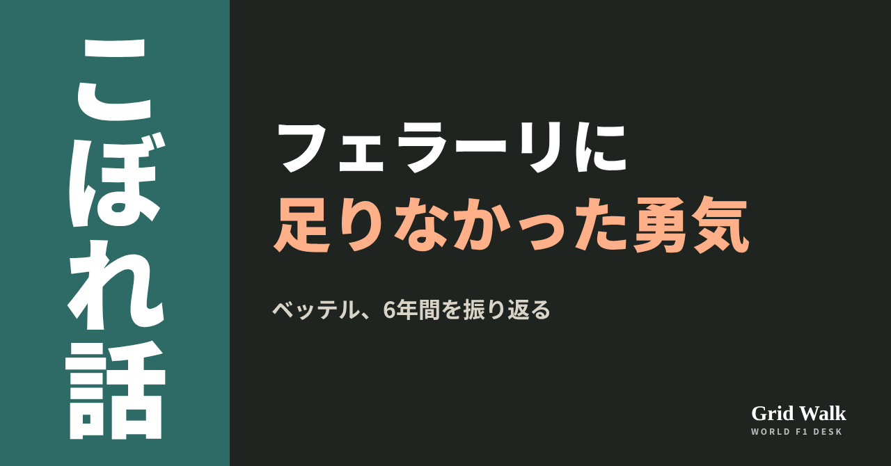<button class="cp dl" data-img="img/vettel-ferrari-courage-20261126.png" data-name="vettel-ferrari-courage-20261126_見出し画像.png">ダウンロード</button></li>
<li class="st"><div class="hd"><span class="no">2</span><b>タイトル</b></div><div class="bx" id="p8t">ベッテル「変化への勇気が少し足りなかったのかも」　フェラーリ時代を回想</div><button class="cp" data-plain="p8t">タイトルをコピー</button></li>
<li class="st"><div class="hd"><span class="no">3</span><b>本文</b></div><div class="bx tall" id="p8r"><p>4度の王者セバスチャン・ベッテル（39）が、フェラーリでタイトルに届かなかった理由を、語りました。努力が足りなかったのではなく、変えることへの勇気が少し足りなかったのかもしれない、という見方です。ドイツのAUTO BILDとF1-Insiderが11月25日に伝えています。</p><p>F1-Insiderの記事の要約と、ベッテルのフェラーリ時代を扱った10月のコラムはサイトで → <a href="https://f1gridwalk.github.io/lens/vettel-ferrari-courage-20261126/?utm_source=note&amp;utm_campaign=vettel-ferrari-courage-20261126">https://f1gridwalk.github.io/lens/vettel-ferrari-courage-20261126/?utm_source=note&amp;utm_campaign=vettel-ferrari-courage-20261126</a></p><p>AUTO BILDによると、話したのは11月25日（水）にベルリンで開かれた、mobile.deの会議 mo:re の場で、司会のフロリアン・バウアの質問に答える形でした。ベッテルは2015年から2020年までの6年間をフェラーリで過ごしましたが、そこでは王者になれていません。</p><blockquote><p>「自分の時代に学んだのは、フェラーリにはその点で、変化への勇気が少し足りなかったのかもしれない、ということだと思う」（ベッテル、AUTO BILD／ドイツ）</p></blockquote><h2>働くほど、疲れていった</h2><p>AUTO BILDによると、ベッテルは、チームがいつも先のことを心配し、もっとよくして最後の一歩を踏み出そうとするなかで、本当の問題を見落としていたと振り返りました。工場では、とても多くの人と話をしたといいます。</p><blockquote><p>「みんな疲れ切っていた」「でも、効率がなかった」（ベッテル、AUTO BILD／ドイツ）</p></blockquote><p>F1-Insiderは、フェラーリは問題を、もっと働くことで解こうとし続けたとまとめています。かける時間は増えても、仕事のやり方は見直されなかった、ということです。ベッテルは、こうも話しました。</p><blockquote><p>「大事な場面で、チームとして少し勇気が足りなかったのかもしれない」（ベッテル、AUTO BILD／ドイツ）</p></blockquote><h2>メルセデスとレッドブルとの違い</h2><p>比べたのは、当時のライバルのメルセデスです。F1-Insiderによると、ベッテルは、メルセデスは仕事をもっと効率よく、あるいは別のやり方でできないかを、いつも問い直していたと話しました。シーズンの終盤になると、フェラーリは置いていかれることが多かったといいます。</p><blockquote><p>「当時は、メルセデスにしょっちゅうやられていた」（ベッテル、AUTO BILD／ドイツ）</p></blockquote><p>フェラーリにいたころ、ベッテルはチームの会議でも、何度も同じことを言っていたそうです。</p><blockquote><p>「僕たちは硬くなりすぎている。リラックスできていない」「信頼がない」（ベッテル、AUTO BILD／ドイツ）</p></blockquote><p>対照的だったのが、ベッテルが2010年から2013年まで4年続けて王者になったレッドブル時代です。F1-Insiderによると、そこには野心と信頼、そしてある種の気楽さが同時にあったといいます。</p><h2>今の首脳陣への批判ではない</h2><p>F1-Insiderは、この発言は今のフェラーリの首脳陣への直接の批判ではなく、ベッテル自身の経験の話だと断っています。語られたのは、ベッテルが走っていた2020年までのチームのことです。</p><p>ベッテルは10月に公開されたARDのドキュメンタリーでもフェラーリ時代を振り返っていて、そのときの話はコラム https://f1gridwalk.github.io/lens/vettel-ferrari-fear-20261029/ にまとめています。F1-Insiderの記事の要約は https://f1gridwalk.github.io/news/de-f1insider-vettel-ferrari-kultur/ にあります。</p><p>編集部としては、ベッテルの言葉は負けの理由を誰かひとりに向けるものではなく、チームの働き方そのものへの問いだと見ています。もっと働くことが答えにならないときもある、という話は、F1の外でもよく聞かれます。</p><p><strong>苦しいときに、もっと働くか、やり方を変えるか。あなたのチームなら、どちらを選びますか？</strong></p><p>━━━━━━━━━━</p><p><strong>F1 Grid Walk では、世界のF1ニュースを毎日日本語でまとめています。</strong></p><p>海外の記事の要約を、毎日載せています。</p><p><a href="https://f1gridwalk.github.io/">https://f1gridwalk.github.io/</a></p><p>ほかの海外記事も読みたい方は、F1 Grid Walkへ。</p><p><a href="https://f1gridwalk.github.io/lens/vettel-ferrari-courage-20261126/">https://f1gridwalk.github.io/lens/vettel-ferrari-courage-20261126/</a></p><p>━━━━━━━━━━</p><p><a href="https://f1-insider.com/formel-1-vettel-daran-ferrari-gescheitert-84230/">出典：F1-Insider.com（ドイツ）</a></p><p><a href="https://www.autobild.de/artikel/vettel-packt-ueber-ferrari-aus-wir-waren-alle-fertig-28923293.html">出典：AUTO BILD（ドイツ）</a></p></div><button class="cp" data-rich="p8r">本文をコピー</button></li>
<li class="st"><div class="hd"><span class="no">4</span><b>ハッシュタグ</b></div><div class="bx" id="p8h">#F1 #F1jp #ベッテル #フェラーリ #メルセデス #レッドブル #カタールGP #F1こぼれ話 #OFFGRID</div><button class="cp" data-plain="p8h">タグをコピー</button></li>
</ol><h3 class="xh">X</h3><ol class="steps">
<li class="st im"><div class="hd"><b>X用の画像</b><em>画像</em></div>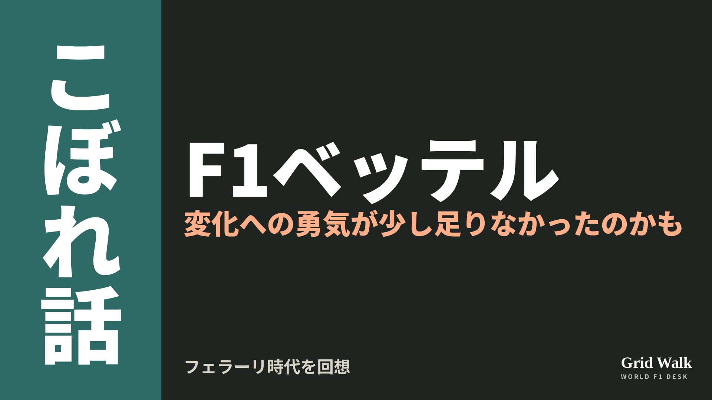<button class="cp dl" data-img="img/x_vettel-ferrari-courage-20261126.png" data-name="x_vettel-ferrari-courage-20261126.png">ダウンロード</button></li>
<li class="st"><div class="hd"><b>① noteをシェアするときの文</b></div><div class="bx" id="p8x0">ベッテルが、フェラーリでタイトルに届かなかった理由を振り返りました。努力ではなく「変化への勇気が少し足りなかったのかもしれない」。noteにまとめました #F1jp #ベッテル #フェラーリ</div><button class="cp" data-plain="p8x0">コピー</button></li>
<li class="st"><div class="hd"><b>② ①への返信</b></div><div class="bx" id="p8x1">ほかの海外記事も読みたい方は、F1 Grid Walkへ。
https://f1gridwalk.github.io/lens/vettel-ferrari-courage-20261126/?utm_source=x&amp;utm_campaign=vettel-ferrari-courage-20261126</div><button class="cp" data-plain="p8x1">コピー</button></li>
<li class="st"><div class="hd"><b>③ ②への返信</b></div><div class="bx" id="p8x2">毎日の海外F1ニュースは、日本語でこちらにまとめています。
https://f1gridwalk.github.io/</div><button class="cp" data-plain="p8x2">コピー</button></li>
</ol></section></main><script>
function done(b,msg){const t=b.dataset.t||b.textContent;b.dataset.t=t;b.classList.add('ok');b.textContent=msg||'コピーしました';setTimeout(()=>{b.classList.remove('ok');b.textContent=t},2000)}
function selectEl(el){const r=document.createRange();r.selectNodeContents(el);const s=getSelection();s.removeAllRanges();s.addRange(r)}
async function rich(el,b){
  try{await navigator.clipboard.write([new ClipboardItem({'text/html':new Blob([el.innerHTML],{type:'text/html'}),'text/plain':new Blob([el.innerText],{type:'text/plain'})})]);done(b);return}catch(e){}
  selectEl(el);let ok=false;try{ok=document.execCommand('copy')}catch(e){}
  if(ok){getSelection().removeAllRanges();done(b)}else{done(b,'選択しました。コピーしてください')}}
async function plain(el,b){
  try{await navigator.clipboard.writeText(el.innerText);done(b);return}catch(e){}
  selectEl(el);let ok=false;try{ok=document.execCommand('copy')}catch(e){}
  if(ok){getSelection().removeAllRanges();done(b)}else{done(b,'選択しました。コピーしてください')}}
let dlns=null;(async()=>{try{dlns=await window.claude?.use?.("downloads")}catch(e){dlns=null}})();
async function img(src,b){
  b.dataset.t=b.dataset.t||b.textContent;
  if(!dlns){try{dlns=await window.claude?.use?.("downloads")}catch(e){}}
  if(!dlns){b.textContent='ダウンロードできませんでした';setTimeout(()=>{b.textContent=b.dataset.t},3500);return}
  try{const blob=await fetch(src).then(r=>r.blob());b.textContent='保存の確認を開いています…';
    await dlns.save({filename:b.dataset.name,data:blob});done(b,'ダウンロードしました')}
  catch(e){const c=e&&e.code;b.textContent=c==='declined'?'キャンセルしました':c==='rate_limited'?'少し待ってからもう一度押してください':'ダウンロードできませんでした';setTimeout(()=>{b.textContent=b.dataset.t},3500)}}
document.querySelectorAll('.cp').forEach(b=>b.addEventListener('click',()=>{
  if(b.dataset.rich)rich(document.getElementById(b.dataset.rich),b);
  else if(b.dataset.plain)plain(document.getElementById(b.dataset.plain),b);
  else img(b.dataset.img,b)}));
</script>